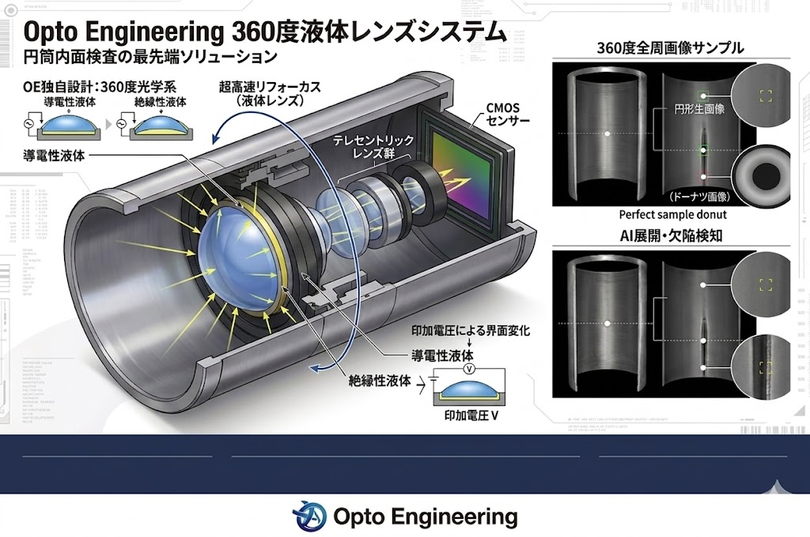

知能化するビジョンと、進化する光学
製造現場における「自動化」は今、単なるルールの実行から「自律的な判断」のフェーズへと移行しています。 業界をリードするHIKROBOTのAI搭載スマートカメラと、OPT Engineeringの高精度テレセントリックレンズの融合は、 これまで人間の感覚に頼らざるを得なかった外観検査を完全に無人化するポテンシャルを秘めています。
判定の「脳」をインテリジェントに
SCシリーズにより、検査PCを廃止。VPU/GPU搭載のエッジデバイスがリアルタイムに推論を実行します。
究極の入力系でノイズを排除
物理レイヤーで歪みをゼロにし、AIが最も判断しやすい「正解の画像」を撮像段階で生成します。
「静かなる課題」への技術的回答
AIは魔法ではありません。 入力される画像のSN比が低ければ、判定は不安定になります。光学系による「撮像の純化」こそが成功の鍵です。

HIKROBOT：エッジAIによる革命
PCレス化により、トータル導入コストを約30～50%削減。専用OSによる長期安定稼働を実現します。

インテリジェント・エッジの核心：SCシリーズ
Hikrobotのスマートカメラ（SCシリーズ）は、単なる撮像機器ではありません。内部に専用のVPU（Vision Processing Unit）およびGPUコアを搭載した「画像処理コンピュータ」そのものです。
1. PCレス・リアルタイム判定
画像データを外部PCへ転送する際の「通信遅延（レイテンシ）」を物理的に排除。撮像から判定、PLCへの信号出力までを数ミリ秒で完結させます。
2. ディープラーニング内蔵
従来のルールベースアルゴリズムでは不可能だった「非定型な欠陥（キズ、汚れ、個体差）」をAIが学習。人間の「経験」に近い判断を自動化します。
運用目的に応じたシリーズ展開
| シリーズ | 特徴 | 主な用途 |
|---|---|---|
| SC2000 (エントリー) | 低コスト・超小型。基本的な有無検査・位置決め。 | 電子部品の有無、ラベルのズレ検知 |
| SC3000 (スタンダード) | ディープラーニング搭載。高性能AIプロセッサ内蔵。 | 金属のキズ、非定型汚れ、外観検査 |
| SC7000 (ハイエンド) | 最大解像度・最高速処理。複雑な多項目検査を1台で完結。 | 自動車部品、医療機器、大型基板検査 |
スマートカメラに「コードリーダー」が多い理由
物流や製造ラインでHikrobotのIDシリーズ（コードリーダー）が圧倒的なシェアを持つのは、以下の合理的理由があるからです。
- ASICによる専用回路： デコード（文字変換）処理をハードウェアレベルで最適化し、爆速の読み取りを実現。
- データ量の圧倒的削減： 数メガバイトの「画像データ」ではなく、数バイトの「文字テキスト」のみを送信するため、通信帯域を圧迫しません。
- 難読コードへの強さ： 金属への刻印（DPM）やビニール越しの反射、印字欠けもディープラーニングアルゴリズムが補正して読み取ります。
Opto Engineering Solution
光学イメージングの専門家が提案する、次世代の外観検査ソリューション
360°外観検査
「4台のカメラを1台に」。ボトルのキャップやネジの側面、円筒形ワークの内壁を、1回の撮影で死角なく捉えます。
テレセントリック
遠近感による歪みを物理的にゼロ化。ミクロン単位の精密測定において、世界標準の精度を提供します。
360度液体レンズ：円筒内面検査の革命

OE独自設計の360度光学系と液体レンズを統合。可動部ゼロでミリ秒単位の超高速ピント合わせを実現します。
- 多品種混流への対応：ワークのサイズが変わっても瞬時に追従
- メンテナンスフリー：機械的な駆動部がなく長期安定稼働
- 設置コスト削減：回転機構や複雑なステージが不要
用途別推奨モデル比較
| 比較項目 | PCHIL シリーズ | PCPB シリーズ |
|---|---|---|
| アプローチ | 「外」から一括撮像 | 「中」に入ってスキャン |
| 対象ワーク | ボトルキャップ、浅穴 | エンジンブロック、深穴 |
| 最大の強み | タクトタイム極小化 | 深部の死角解消 |
装置メーカーが「採用せざるを得ない」3つの急所
1. 圧倒的なコスト・スペース削減
カメラ・ケーブル・照明を「4セットから1セット」へ。設置面積に制限のある半導体装置や小型検査機において最強の武器となります。
2. ソフト開発工数の劇的な解消
複数カメラの画像を繋ぎ合わせる「ステッチング」が不要。1ショットで全周画像が手に入るため、アルゴリズムが極限までシンプルになります。
3. 現場調整・メンテナンスコストの削減
複数カメラの光軸ズレや角度調整といった、出荷後のサポート工数をゼロ化。システムとしての安定性を物理的に保証します。
ポラライゼーション（偏光）の魔法
光学系全体を自社で最適化するOPTの強みは、カメラ「ITALA G」の偏光モデルにも現れています。 金属のテカリやガラスの反射を、ソフトウェアの画像処理ではなく**「物理的な光のフィルタリング」**で消し去ります。
- 透明フィルム越しのキズ検査
- 光沢アルミダイカストの寸法測定
- 基板上のハンダボールの乱反射防止
「汎用品」の王者に、特殊光学で勝つ
誰もが使いやすい汎用品を提供する大手メーカーに対し、Opto Engineeringは**「特殊な光学条件」**を求める設計者のためのプロフェッショナルな救世主です。 「諦めかけていた死角」や「消えない反射」に直面したとき、OPTのレンズは単なる部品ではなく、システムを救う**「魔法の杖」**へと変わります。